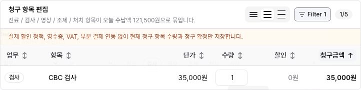

Billing Table Sort / Filter Behavior Pilot
이번 작업은 수납의 청구 항목 테이블에 실제 정렬과 필터를 먼저 적용한 pilot이다. 헤더에는 정렬만 두고, 필터는 섹션 오른쪽의 Filter 버튼에서 조건을 여러 개 설정하는 방식으로 정리했다.
무엇이 바뀌었나
- 청구 항목 테이블 헤더에서 단일 컬럼 정렬을 실제 row 순서에 적용한다.
- 정렬은 한 번에 하나만 활성화되고, 없음 → 오름차순 → 내림차순 → 없음 순서로 바뀐다.
- 필터는 테이블 헤더가 아니라 청구 항목 섹션의 Filter 버튼에서 연다.
- 필터 조건이 있으면 버튼이
Filter N으로 조건 수를 보여준다. - 필터 드롭다운 안에서 조건을 추가하고, footer에서 적용, 닫기, 초기화를 처리한다.
- Save view, saved filters, 바깥 Clear 버튼, 활성 필터 chip 줄은 넣지 않았다.
보존한 것
- 청구 항목 수량 편집과 금액 계산을 유지했다.
- 필터가 보여주는 row를 줄여도 실제 청구 합계는 기존 청구 항목 기준으로 유지된다.
- 청구 확정, 수납 완료, 보호자 묶음, mock auth/session 동작은 유지했다.
- URL, localStorage, Supabase, 서버 정렬/필터는 이번 pilot 범위에서 제외했다.
Evidence
Mock auth storage state로 실제 수납 화면을 열고, 로그인 화면이 아닌 청구 항목 테이블을 캡처했다.

변경 파일
| 파일 | 내용 |
|---|---|
src/features/billing/module.tsx |
수납 청구 항목 테이블의 단일 정렬, 섹션 Filter 버튼, 필터 builder, empty state를 추가했다. |
tests/billing.spec.ts |
청구 항목 정렬과 필터 builder 동작을 검증하는 focused Playwright test를 추가했다. |
docs/design/system/table-sort-filter-behavior.md |
DEN-271 pilot 결과와 유지해야 할 UI 정책을 기록했다. |
docs/work/design-system/DESIGN-SYSTEM-PR-027-billing-table-sort-filter-behavior.md |
DEN-271 repo work item을 추가했다. |
검증 결과
- Passed
npm run lint - Passed
npx tsc --noEmit -
Passed
PLAYWRIGHT_BASE_URL=http://127.0.0.1:3101 npx playwright test tests/billing.spec.ts -g "billing invoice line table supports single sort and section filter builder" -
Passed
PLAYWRIGHT_BASE_URL=http://127.0.0.1:3102 npx playwright test tests/billing.spec.ts - Passed Browser QA evidence capture with mock auth.
- Passed
npm run docs:check
다음 단계
DEN-271은 Human Review로 넘길 수 있다. 다음 구현은 같은 정책을 chart/order 테이블에 제한 적용하는 DEN-272가 자연스럽다.